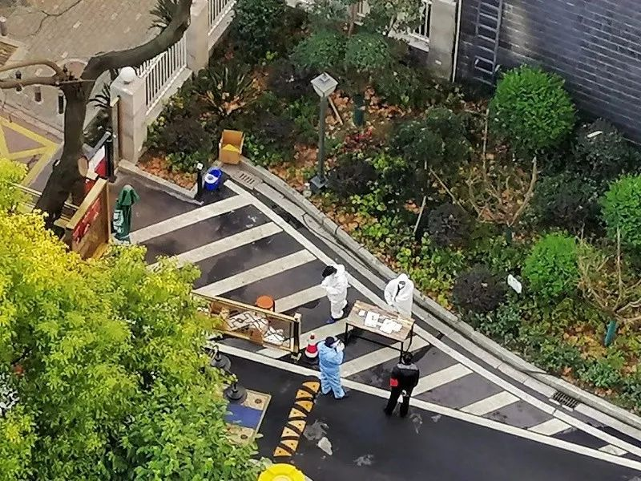

口述实录 | 独自进武汉当心理志愿者，我竟也两次崩溃
原文链接 备份链接 早春的武汉春风拂面，这两天接到爸妈打来的电话，询问我的近况。我告诉他们我过得好着呢：吃着大餐、住着五星级的酒店。其实，我特别想念妈妈蒸的馒头，就算只就着大蒜，我也能吃两个碗大的馍馍。 口述 | 毛 平 整理 | 沈 …

也是突然发现，我们的门楣窗帷、院墙楼道，我们的一饭一菜，居然与我们的国家有如此密切的联系。
文 | 刘惠玲
我家住汉口宝丰路交通小区，从2月中旬小区封闭管理至今，我当志愿者菜篮子分发团“团长”也快满月了。
武汉封城后的20天，即2月11日，随着防控疫情的需要，主要是实行“外防输出，内防扩散”，武汉开始封小区。武汉市有3000多个小区，很多小区还是开放型的，网格封闭，估算下来，不考虑三班倒，志愿者总人数也有五万之众。
我们交通小区招募志愿者,“原汤化原食”地进行自治性封闭，大家彼此知根知底，效果不错。工作的性质是引导人员进出，登记每个家庭的需要。我是第一个出来站岗的，成为五万分之一，之后又担任了志愿者菜篮子分发团的团长。一开始，主要工作是查看核实因防疫需要的小区人员进出信息，测量每个人体温，引导人进出消毒鞋底等。到了登记每户人家的需求，汇总居家必需品——那就显得五花八门，但大多数又确实是日常生活离不开的东西，一下子工作量就上去了。

2月11日起，武汉开始封小区，我家小区也不例外
封小区，意味着平时所有的生活物资进出方式要暂时改变了。这样一来，一开始很多人家的反应就像是凉水甩进了热油锅里，一下子炸开了。都知道我们武汉人的耿直脾气，爱吃辣椒，爱吃热干面，待人真诚不带水分，遇事也少冷静。对上心了，两肋插刀赴汤蹈火；遇上烦心事，也难藏着掖着，不迂回打马虎眼，面对面直接就给你干起来。已经在家闷了不短的时间了，小区一封，头疼脑热或原本有各种不适的人要看病，老人小孩急需用药，关键是天天开门七宗事，柴、米、油、盐、酱、醋、茶，这吃喝的事儿可是耽搁不得的。平常不觉得缺什么，既封城又封小区，客观加上主观，忽然感觉平常不那么缺少的生活用品，一下奇缺起来。

我穿上白色防护服，担任起小区志愿者，需要仔细核对清点各家物资需求
我家所在的交通小区在汉口，但工作单位的生产基地还在300多公里以外鄂西北的襄阳市，具体位置在汉江上的崔家营河段。那是我们的船舶通航和水力发电基地。当许多企业开始在春节后筹备复工复产时，我们单位的同事都在感慨——作为湖北省交通厅下属二级单位的崔家营航电枢纽管理处，可是从来不存在复工复产之说，因为我们从来就没有停工停产过。1年12个月，1月4周，每周7天通航，每天24小时发电不休。我可以不无自豪地带上一句的是，武汉封城封小区，却绝不可能封航道运行和发电生产；而且，我们交通航电人做到了大小封闭的41天中全天候运行，干群无一例感染，平均每日发电超100万度，给祖国的肌体增添“新鲜血液”。我在每天做志愿者工作前，总是通过视频或单位工作微信群，适时连接奋战在汉江上的交通航电同仁，问他们的生产和生活环节。在一线指挥的书记总是让我放宽心，全力做好自己家门口的“团长工作”。我们同饮一江水，每天都要相互鼓励加油一番，互道珍重祝福，然后，才是进入我的小区菜篮子志愿者分发团的“团长”角色。

我和志愿者们把好小区关口
儿子看我忙，主动申请接替我站岗值班，成为小区最年轻的抗“疫”站岗志愿者之一。年轻人嗜睡，他平日清晨7点还在梦乡，现在要顶老妈站岗值班了，此时的7点已然是防护服、口罩、手套全副武装，在小区门口一站就是好几个小时，坚守我们志愿者自发的铁的纪律。这也让我颇为欣慰，真是艰难困苦，玉汝于成！
但我更急切夸耀的，还是我的团员们。我是第一批志愿者，相对来说，志愿者工作最繁琐并容易出纰漏的，就是我被选举为“团长”的菜篮子志愿者分发团。就说相对简单的超市套餐，用手机微信群接龙的形式登记，汇总各家需求，收集各家付款。超市套餐送来后，难题也来了。分发志愿者先是清点、验收、入库，然后引导领用物资者都彼此一米开外距离排队。因电梯间的狭小空间最容易传染病菌，大家回家尽量走楼梯，实在太高楼层需电梯者，也要耐心排队等候，确保一人一梯。还有家里只有老人或发热生病等不能出来的，那就要我们一一逐家逐户送。有些老人不会微信支付，就由不住在小区的子女微信采购，但领取时，子女们也代替不了，也必须由我们志愿者来完成。一般中午发放套餐，完成后志愿者自己回家吃饭，时间都在下午两点之后。下午发放的物资，那就要到天黑才能全部发放到各家，再照顾自己的肚皮。每天有几百户要分发，多时达9种套餐，上千份物资。有些货物紧缺，如罗森豆制品，必须先得保障火神山、雷神山等医院的供应，有时一个套餐要等五六天才到，有些订户都不记得了。开始分发时，有的人不记得购物序号和具体套餐。我的策略是，自己打点“埋伏”，平日总是每个套餐都订上，随时准备应对发错了，就把自己的套餐供出来，填上。

打包好等待分发的物资
我们15个人的小团，多数是女性。负责采购的罗红燕，身体虚弱，原本在省抗疫指挥部安排她回家休息的，可她仍每天为采购合适的套餐忙到深夜。武汉市政府有10元10斤5个品种的蔬菜套餐，用以供应困难群体，由政府每份补贴25元。她总是和大家沟通一致，把这些指标留给最需要的群体。高斌是高速公路纪委书记，每次去路上指挥督促工作完成后，回到小区就直接参加分发团分发并兼任大家的摄影师。他总说，多少代人不遇的疫情让我们给遇到了，那就得留点影像资料给自己，也给后人……

志愿者在分送物资
我们这个小区别具特色之处，是享受厅级待遇的有31户。前段时间，媒体曝光的那个没有高干病房不上医院的司法厅退休厅官，简直是败了武汉人的门风，给武汉人脸上抹黑。其实武汉人没有这么“刁”。我们这个小区，不论是在职厅长还是退休的厅级领导，都主动捐钱捐物，尤其是做好家人安心宅家工作，由此可以把省下的口罩、手套全部捐给社区。他们也都会抽空来站岗，防护服、口罩、手套，一样不会少。有时，七十多岁的老领导还幽默地对我行举手礼：“报告刘团长！”我也不客气地笑着给他派活。

我在分拣物资等待分发
“春风又绿江南岸”。晴川历历的汉阳树和芳草萋萋的鹦鹉洲，都应和上了千年前诗人崔颢的诗情，将庚子春意往纵深推送，我们各自脸上的口罩这方特殊通行证终究会摘除；那时，我们在欣喜雀跃之际，也多多少少会心生不合时宜的依依之情吧？我们的团当然会解散，团长自动“解甲归田”，但我们一个战壕中结下的情谊和美好情愫，一定会久久氤氲在我们的记忆深处。也是突然发现，我们的门楣窗帷、院墙楼道，我们的一饭一菜，居然与我们的国家有如此密切的联系。这些日子里，给我们每个人激励最大的一句话，就是：武汉胜则湖北胜，湖北胜则中国胜！
作为武汉人，我们真切地感受到了，我们的脉搏，与身边的长江完全合拍，丝毫不差。


征集令
阳春三月，万物复苏。在抗击疫情的战斗中，我们迎来了春天，《新民周刊》也迎来了新闻线索和故事征集的第二弹。
如今，经历了一个多月休眠的城市正在逐渐苏醒，各行各业都开始有序复工复产。
不论您是企业老板、管理者，还是普通员工；又或者，您是老师、家长，还是学生本人……我们希望了解复工复产复学过程中的困难，或暖心故事。
如果你是抗疫一线的医生护士，疫情期间拍下了珍贵的摄影作品，也欢迎联系我们投稿。
当然，抗击新冠肺炎疫情的相关故事，我们仍然欢迎。
希望广大读者朋友，提供相关线索，说出你的故事，让我们用新闻留存这一切。
《新民周刊》新冠肺炎线索征集值班编辑联系方式（添加时请简要自我介绍）：
周一：应 琛 微信号：paulineying0127
周二：金 姬 微信号：gepetta
周三：黄 祺 微信号：shewen-2020
周四：周 洁 微信号：asyouasyou
周五：孔冰欣 微信号：kbx875055141
周六：吴 雪 微信号：shyshine1105
周日：姜浩峰 微信号：jianggeladandong
✳如你需要捐赠物资，可与以下两位工作人员联系:王勇：WangYong-SH 吴轶君：rommy150708（添加时请注明“捐物资”，方便工作人员快速通过您的申请，谢谢。）
新闻是历史的底稿，你们是历史的见证者。期待你的故事、你的线索！

▼
大家还都在看这些
▼
新民周刊所有平台稿件， 未经正式授权
一律不得转载、出版、改编或进行
与新民周刊版权相关的其他行为，违者必究


原文链接 备份链接 早春的武汉春风拂面，这两天接到爸妈打来的电话，询问我的近况。我告诉他们我过得好着呢：吃着大餐、住着五星级的酒店。其实，我特别想念妈妈蒸的馒头，就算只就着大蒜，我也能吃两个碗大的馍馍。 口述 | 毛 平 整理 | 沈 …
原文链接 备份链接 武汉嫂子“汉骂”视频 “汉骂”嫂子和作家方方 数日前，一段微信语音在网上“一骂而红”，名叫“@雨儿”的业主在她所在的小区群里，用中气十足的武汉方言痛斥社区和中百超市推出“阴阳套餐”，社区推卸责任、置若罔闻。 “我们买一 …
原文链接 备份链接 武汉嫂子“汉骂”视频 “汉骂”嫂子和作家方方 数日前，一段微信语音在网上“一骂而红”，名叫“@雨儿”的业主在她所在的小区群里，用中气十足的武汉方言痛斥社区和中百超市推出“阴阳套餐”，社区推卸责任、置若罔闻。 “我们买一 …
原文链接 备份链接 作者：北林 编辑：北林 特别不感谢：给阻止疫情制造麻烦的混蛋们 我听来了许多虚假的、不符合主流的、刻意制造矛盾的流言蜚语; 发这里是告诉大家: 不要相信，不要转发， 都是假的，不要去调查， 尤其是记者们，以下都是假 …
原文链接 备份链接 他们理解小区被封，理解只能选择被塞了四大包汤圆的团购套餐，理解菜价成倍上涨，理解要继续忍受生活上的不便，才有可能早一点等来结束的一天。 文 | 谢婵 编辑 | 小豆 武汉伢王嘉兴给父母打电话，得知小区业主群里推荐 …